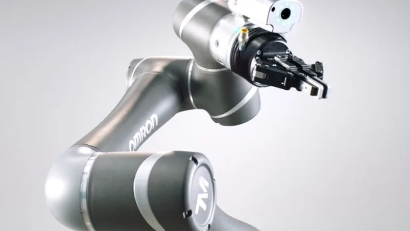
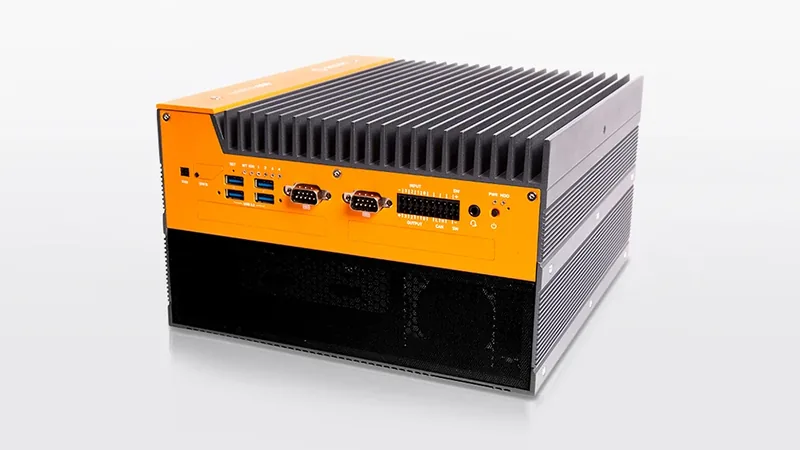

Omron bets $675M on physical AI: Japan’s automation giant buys Vermont’s OnLogic
On Monday, Meta introduced the Muse Wonder series — Muse Wonder and Muse Wonder Full — calling them its most capable models to date and its first true bid for the AI frontier. The launch is the clearest signal yet that the company has finished rebuilding its AI organization and now intends to compete with OpenAI and Anthropic on their own terms: closed weights, premium pricing, and agents that do real work.
Japan’s Omron is spending $675 million to become what it calls a “physical AI company,” buying Vermont industrial-PC maker OnLogic and its parent Interlogic in an all-cash deal announced on Tuesday.
The $675 million price tag is set on an enterprise-value basis and will be paid entirely in cash, funded primarily from Omron’s cash on hand. The agreement was signed on October 10 (Japan time) and takes the form of a reverse triangular merger: a U.S. subsidiary Omron establishes will be absorbed into Interlogic, which then becomes a wholly owned subsidiary, with OnLogic and its sister companies folded in underneath. The sellers include founders Roeland Groeneveld and Lisa Groeneveld alongside 167 employee shareholders. Closing is expected around January 2027, pending regulatory approvals.
Why Omron wants the factory’s computer
Omron’s pitch is that industrial AI has to run where the work happens. Pairing OnLogic’s ruggedized industrial PCs with Omron’s high-precision control technology, the company says, will accelerate a next-generation physical AI platform for its industrial automation business — and give it a bigger customer base in the United States, where OnLogic does the bulk of its business. OnLogic keeps operating as an independent company, retaining its brand and its current management team.

The physical AI land grab
Omron is hardly the first industrial giant to decide the next AI battleground is the physical world. Automation vendors have been buying down the stack — from control systems to the edge computers that run models on the factory floor. The move also fits Omron’s recent posture: in May, its U.S. robotics subsidiary signed a collaboration agreement with Italian automation firm Comau to develop automation services for industrial manufacturing. Investors took the acquisition news in stride — Omron’s shares were roughly flat in Tokyo morning trading while the Nikkei 225 fell about 2.2%.

For now, the deal still needs regulatory clearance, and both sides are targeting January 2027 to close. If it lands, Omron goes from selling the components that automate factories to owning the computers that think inside them.
Sources: Reuters — “Japan’s Omron to buy US industrial PC firm Onlogic for $675 million in physical AI push” (October 13, 2026); BigGo Finance — “Omron to Acquire U.S. Industrial PC Maker OnLogic for $675 Million to Bolster Physical AI”; AI Weekly — AI News Today, October 13, 2026.